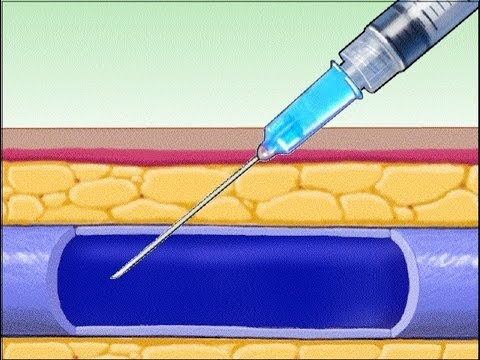
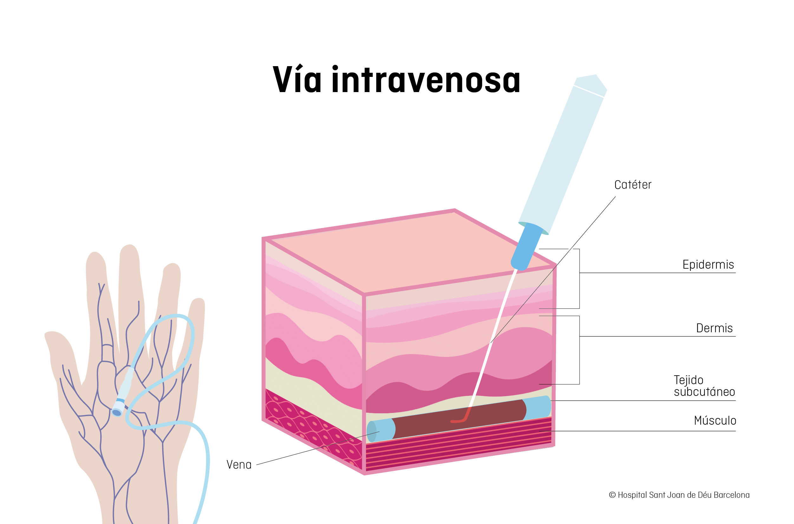

La inyección intravenosa es un método para administrar medicamentos, líquidos o sangre directamente en una vena a través de una aguja o catéter. Garantiza un efecto inmediato al entrar directo al torrente sanguíneo, siendo común en emergencias y hospitales.


Técnica de aplicación
Si la administración se va a realizar mediante una inyección en vena:
Si la administración se realiza a través de una vía IV ya colocada:
Aplicaciones clínicas